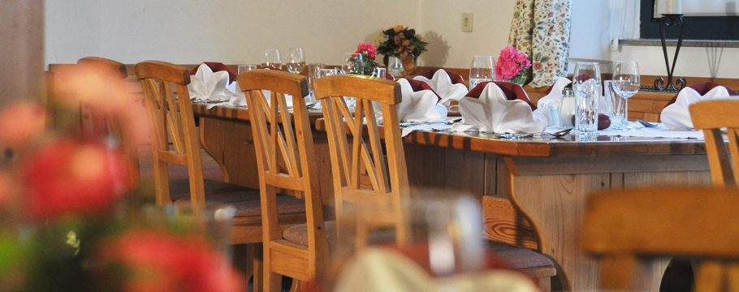

Familienbuffet
Gebackenes Hühnerschnitzel, faschierte Laibchen, Berner Würstel, Grillkotelette, Spaghetti Bolognese, Pommes frites, Reis, Gemüse, Erdäpfelsalat, Apfelstrudel.
Kinder von 0–12 Jahren gratis
€ 14,90
Unverbindliche Gestaltungs-Vorschau · keine offizielle Website des Hotel Moser-Reiter · erstellt von AVOS Solutions
In unserem gemütlichen, im Landstil eingerichteten Restaurant spüren Sie die Gastfreundschaft von Moser-Reiter. Unser freundliches Personal verwöhnt Sie mit gut bürgerlicher Küche und lokalen Spezialitäten aus der Umgebung der Wachau sowie saisonalen Köstlichkeiten. Auch eine breite Auswahl an Rot- und Weißweinen darf bei einem guten Essen zu zweit oder in geselliger Runde nicht fehlen.
Abholung oder Lieferservice von 11 bis 20 Uhr, solange der Vorrat reicht. Bitte unter 02757 2448 anmelden — Änderungswünsche bei der Bestellung bitte gleich dazu sagen. Wir kochen für Sie auch bei einem Blackout.
Eine Auswahl aus unserer Karte — weitere Angebote finden Sie vor Ort. Änderungen vorbehalten.

Wir ersuchen um Tischreservierung — besonders für die Sonntagsbuffets.
Jeweils von 11.30 bis 14.30 Uhr. Wir ersuchen um Tischreservierung unter 02757 / 2448 oder 2444 — Familie Reiter und das gesamte Team freuen sich auf Ihren Besuch.
Gebackenes Hühnerschnitzel, faschierte Laibchen, Berner Würstel, Grillkotelette, Spaghetti Bolognese, Pommes frites, Reis, Gemüse, Erdäpfelsalat, Apfelstrudel.
Kinder von 0–12 Jahren gratis
Kräuterfrittatensuppe, Rieslingschaumsuppe mit Zimtstangerl, Kalbsbraten in Dirndlschaumsauce, Wildschweinbraten, Zanderfilet vom Grill, ofenfrische Ripperl, gebackenes Hühnerbrustfilet, vegane Gemüselaibchen, Basmatireis, Gemüse, Schwammerlstrudel, Kroketten, Serviettenschnitten, Salatbuffet, Biskuitroulade mit Dirndlmarmelade, Sachertorte.
Kinder 0–5 gratis, 6–14 halber Preis · auch im Volkshaus St. Leonhard a. Forst
Waldviertler Erdäpfelsuppe, klare Rindssuppe mit Backerbsen, Sturmbraten, Mostbraten, geröstete Leber, Zwiebelrostbraten, Blunzengröstel, Bratwürstel, Cordon bleu, Surschnitzel, Krautfleckerl, zweierlei Knödel, Braterdäpfel, Speckkraut, Salatbuffet, Besoffener Kapuziner, Strudelvariationen, Vanillesauce.
Kinder 0–5 gratis, 6–14 halber Preis
Grießnockerlsuppe, Backhenderl, Grillhendl, Pommes frites, Reis, Salatbuffet, Joghurtschnitte.
Essen Sie soviel Sie wollen · Kinder 0–5 gratis, 6–14 halber Preis
Wildcocktail mit Melonen & Trauben, Wildeinmachsuppe mit Knödel, gebackenes Wildschweinschnitzel in Mohnpanier, Hirschbraten in Burgundersauce, Grillkotelette vom Wildschwein, Rehbraten, Hasenkeule in Sauce, Ananas-Rotkraut, zweierlei Knödel, Kroketten, Rotweinbirnen, Preiselbeeren, Salatbuffet, Maronischnitte, Kardinalschnitte, Punschschnitte.
Kinder 0–5 gratis, 6–14 halber Preis
Klare Rindsuppe mit Nudeln & Leberknödel, Schweinsschnitzel, Surschnitzel, Holzhackerschnitzel, gebackenes Fischfilet in Knusperpanier, Hendlschnitzel in Currysauce, gebackene Leber, Gemüseschnitzel, Butterreis, Erdäpfel, Pommes frites, Salatbuffet, Marillenmarmelade-Palatschinken.
Kinder 0–5 gratis, 6–14 halber Preis
Ebersdorf 4, 3652 Leiben — Öffnungszeiten: Mittwoch, Donnerstag und Freitag ab 16.00 Uhr, Samstag und Sonntag ab 9.00 Uhr. Die Öffnungszeiten können variieren; auf Anfrage öffnen wir auch an Ruhetagen.
Das Hotel Restaurant Moser-Reiter am Bahnhofsplatz 3 in Pöchlarn hat ganzjährig geöffnet — Familie Monika Reiter und das gesamte Team freuen sich auf Ihren Besuch.